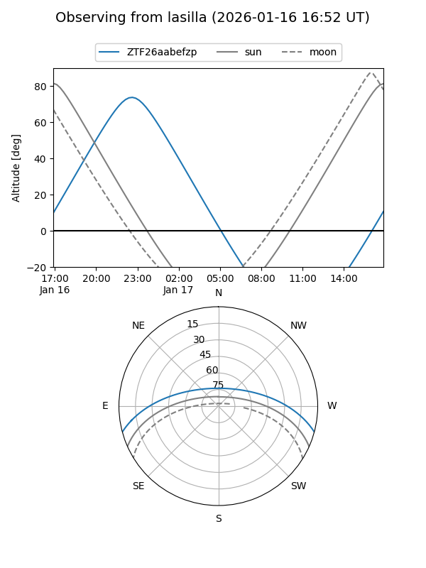
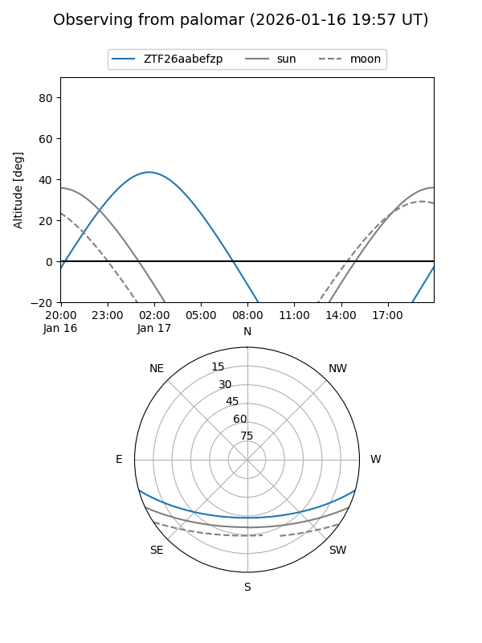

ZTF26aabefzp
Target ZTF26aabefzp at 2026-01-17 09:15
Aliases and brokers:
FINK: link
Lasair: link
ALeRCE: link
alt names
ZTF26aabefzp (ztf,fink_ztf)
Coordinates:
equatorial (ra, dec) = 24.2150,-13.23316
equatorial (HMS+DMS) = 01:36:51.60,-13:13:59.38
galactic (l, b) = (162.5600,-72.51156)
Flags:
Photometry:
last ztfr=19.66
1 ztfr detections
Lightcurve

Visibility


Additional plots